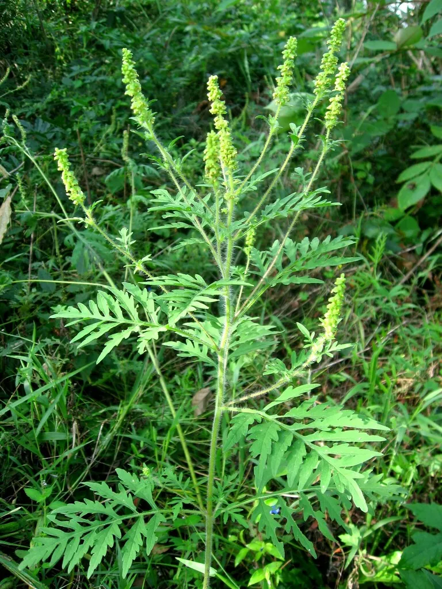
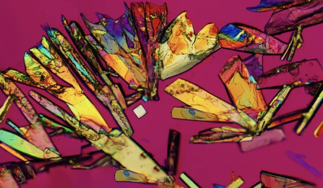
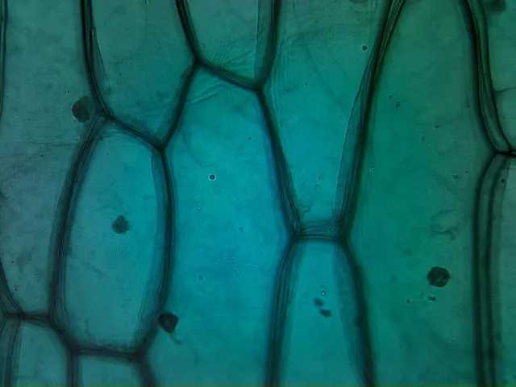
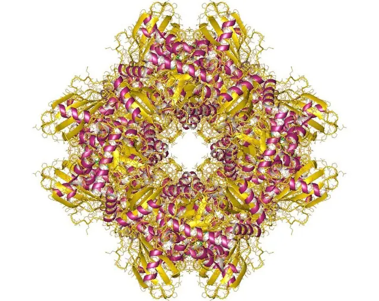

Для студентів
Конспект
Стислі наочні матеріали до лекцій і практичних занять: фото, описи та джерела, зібрані в одному місці.
 Збудники хвороб рослин
Найпоширеніші хвороби сільськогосподарських культур України: збудник під мікроскопом, прояви на рослині, розвиток хвороби та шкодочинність.
Відкрити
Збудники хвороб рослин
Найпоширеніші хвороби сільськогосподарських культур України: збудник під мікроскопом, прояви на рослині, розвиток хвороби та шкодочинність.
Відкрити

Бур'яни України Найшкодочинніші бур'яни полів, городів і населених пунктів: фото, карти поширення у світі, біологія, шкодочинність і контроль. Відкрити
Амінокислоти 20 протеїногенних амінокислот у рослинах: будова, класи, амфотерність і pI, шість родин біосинтезу, транспорт азоту, фітогормони. Відкрити
Рослинна і тваринна клітини Відмінності рослинної клітини: клітинна стінка та її хімія, плазмодесми, вакуоля, пластиди, три геноми, поділ з клітинною пластинкою. Відкрити
Ферменти Будова й активний центр, класифікація КФ 1–7, механізми каталізу, кінетика Міхаеліса — Ментен, інгібування та алостерична регуляція. ВідкритиФото на картках: фітофтороз картоплі та амброзія — з відповідних статей конспекту; епідерміс цибулі — loganrickert, Wikimedia Commons · CC BY 2.0; кристали амінокислоти в поляризованому світлі — Aw1792300, Wikimedia Commons · CC BY 4.0; Рубіско (PDB 1AA1) — Astrojan, Wikimedia Commons · CC BY-SA 4.0.